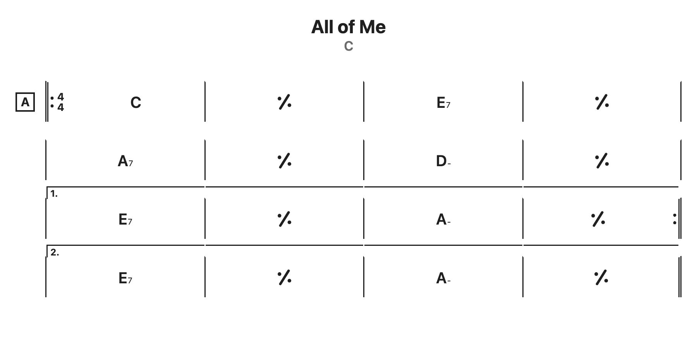

Try it
Type on the left, the chart renders on the right. The grammar reference explains every symbol.
Examples
All of Me
Header, section label, repeats and endings.
title: All of Me key: C time: 4/4 [A] ||: C | % | E7 | % | | A7 | % | D- | % | | [1.] E7 | % | A- | % :|| | [2.] E7 | % | A- | % ||
Timing
Holds by spacing, tab and _, an uneven bar, and an unknown token. Holds are shown as dots here.
title: Timing | C | C G7 | C D- G7 | C D- G7 | | C D- | C _ D- G7 | C D- | H7 C |
Structure
Repeat counts, endings, coda, segno, D.S. al Coda, a time change, a text marker and a comment.
title: Structure key: Bb time: 4/4 // intro || Bb^7 | G-7 | C-7 | F7 || [A] ||: [segno] Bb^7 | Bb7 | Eb^7 | Eb-6 | | [1.] Bb^7 G7 | C-7 F7 :||x2 | [2.] Bb^7 | [D.S. al Coda] F7 || [B] | 3/4 D-7 | G7 | C^7 | % | | [Solo] C-7 F7 | 4/4 Bb^7 | [coda] | Eb^7 | Ab7 | Bb^7 | [fine] % ||
Obsidian plugin
Put a fenced code block with the language chordsheet in any note. It renders in reading mode and in live preview, and exports to PDF through Obsidian's own export.
- Community plugins: search for "Cool Chord Sheets" once it is listed.
- Until then, install with BRAT using the repository URL, or copy
main.js,manifest.jsonandstyles.cssfrom a release into.obsidian/plugins/coolchordsheets/. - Enable the plugin. Three settings: chord font size, show holds, mark uneven bars.

Standalone library
Two files, no dependencies. Every <pre class="chordsheet"> becomes a chart when the page loads. Use <pre>, because the grammar counts spaces.
<link rel="stylesheet" href="coolchordsheets.css"> <pre class="chordsheet"> | C | G7 | C D- G7 | C D- G7 | </pre> <script src="coolchordsheets.js"></script>
Per-element options: data-show-holds="true", data-show-uneven="false", data-font-size="20". Add data-manual to the script tag and call CoolChordSheets.renderAll() or CoolChordSheets.render(text, el, options) to control rendering yourself. See the README for the ES module build.